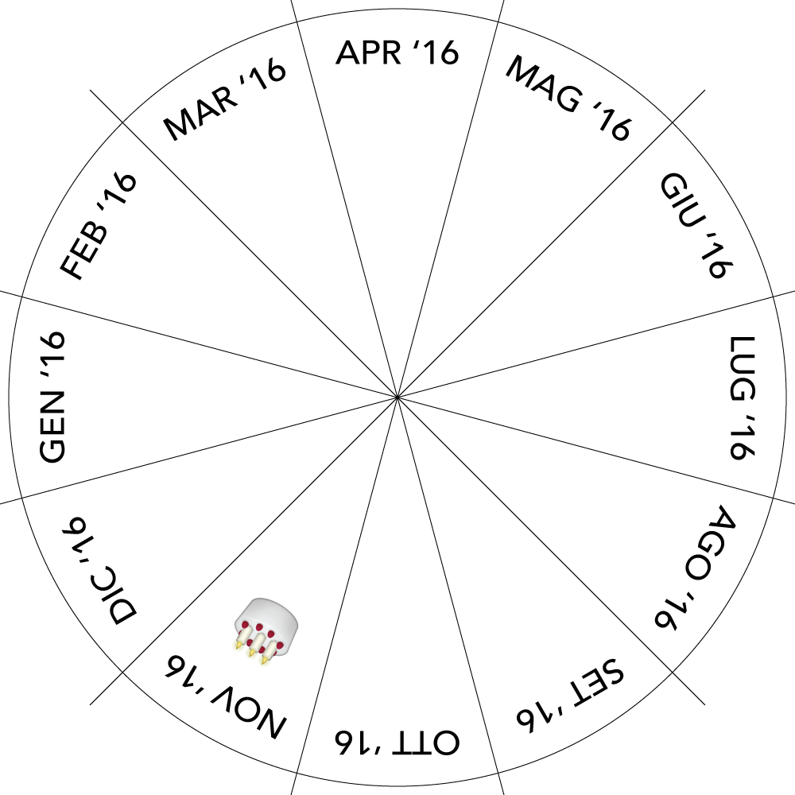

<html>


<head>
    
    <script 
    src="https://d3js.org/d3.v4.min.js">
    </script>   
    
    <script 
    src="https://aframe.io/releases/0.6.0/aframe.min.js">
    </script>    
    
    <script 
    src="https://unpkg.com/aframe-particle-system-component@1.0.x/dist/aframe-particle-system-component.min.js">
    </script>
    
    <script 
    src="https://unpkg.com/aframe-animation-component/dist/aframe-animation-component.min.js">
    </script>
    
    <script src="https://cdn.rawgit.com/zcanter/aframe-gradient-sky/master/dist/gradientsky.min.js"></script>


</head> 

<body>
    
<audio id='audio1' src="assets/rain_long.mp3" autoplay loop></audio> 
    
<!--    <audio id='audio2' src="assets/noise01.mp3" autoplay loop></audio> -->

<audio class="aux" id='winter' src="assets/winter.mp3" playsinline loop></audio> 
<audio class="aux" id='spring' src="assets/spring.mp3" playsinline loop></audio>
<audio class="aux" id='summer' src="assets/summer.mp3" playsinline loop></audio>
<audio class="aux" id='fall' src="assets/fall.mp3" playsinline loop></audio> 
<audio id='bip' src="assets/bip.mp3"></audio> 
    
    
    <a-scene>
        
                <a-assets>
        
        <!-- caricamento traccia audio -->
        
         
<!--            	-->
            	
	
    </a-assets>  
        <a-sky color="#00f1fe">
        </a-sky>
        
<!--
        <a-gradient-sky 
        material="shader: gradient; topColor: 255 0 0; bottomColor: 0 121 255;">
        </a-gradient-sky>
-->
	
<!--        <a-cylinder  src="#calendar" position="0 -2.9 0" height="1" radius="3"></a-cylinder>-->
		
		<a-cylinder  color="green"  position="0 -3 0" height="1" radius="18" fog="true"></a-cylinder>
		
<!--		<a-cylinder  src="#top" position="0 6 0" height="1" radius="3"></a-cylinder> -->
		
		
		<a-text value="Darker is the sky, higher is concentration of PM10 in the air. Higher is the sound of the rain, more intense are the precipitations. A specific sound identify each season.

Polluted air is not visible to the eye, 
but we still feel it.
					   
Lugano 2016" position="-1.5 4 0" rotation="90"></a-text>		
			
			
</a-entity>
		
    <!--    <a-entity position="0 2.25 -15" particle-system="preset: rain" rotation scale visable></a-entity>  -->
        
        <a-camera>
                <a-cursor></a-cursor>
        </a-camera>
    
    </a-scene>
 
    
<script>
            // caricamento database //
            d3.csv('database/database.csv', data => {
            // mostrare dati in console //   
            console.log(data)
                
                d3.selectAll('.aux').each(function(){
                    d3.select(this).node().volume = 0
                })
            
                var scenes = d3.select('a-scene')
                    .selectAll('.entity')
                    .data(data)
                    .enter()
                    .append('a-entity')
                    .classed('entity', true)

                    .attr('rotation', (d, i) => {
                        return '0 ' + (i*360/data.length) + ' 0'
                    })

                // funzione per creare piani //
                scenes.append('a-plane')
                    .attr('width', 8)
                    .attr('material', "side: double")
                    .attr('height', 8)
                    .attr('color', '0 0 0')
                    .attr('opacity', '0')
                    .attr('position', '0 0 -20')
                    .attr('rotation', '0 0 0')
                
                // funzione per mappare pm10 su sfera //
//                scenes.append('a-sphere')
//                    .attr('radius', d => d.pm10/10)
//                    .attr('color', '#a3a3a3')
//                    .attr('position', '0 0 -15')
//                              
                // scala lineare colori //
//                var colors = d3.scaleLinear()
//                                .domain([0, 25])
//                                .range([255, 150])
//                
//                var colors2 = d3.scaleLinear()
//                                .domain([0, 25])
//                                .range([255, 50])
                
                // audio normalizzato da o a 1, zero volume minime uno volume massimo //
                var mapRain = d3.scaleLinear()
                                .domain([0, 300])
                                .range([0, 1])

                // audio PM10 normalizzato da o a 1, zero volume minimo uno volume massimo //
                var mapTemp = d3.scaleLinear()
                                .domain([2, 30])
                                .range([0, 1])  
                
                var mapCol = d3.scaleLinear()
                                .domain([9, 27])
                                .range(['#00ddff', '#555d60'])
                

                // funzione per mappare il dato su colori e audio, piu selezionatore //
                scenes.on('mouseenter', function(d, i){
                    
                    /*
                    d3.select('a-gradient-sky')
//                        .attr('color', colors(d.temperature))
//                        .attr('material', "opacity:" + opacity(d.pm10))
                    .attr('material', "shader: gradient; topColor:150 150 "+colors(d.pm10)+"; bottomColor: 50 50 "+colors2(d.pm10)+";")
                    */
                    
                    d3.select('a-sky')
                        .attr('animation', null)

                    d3.select('a-sky')
                        .attr('animation', () => {
                            return 'property: material.color; dur: 500; easing: easeInOutCirc; to: ' + mapCol(d.pm10)
                        })
                          
                    d3.select('#audio1').node().volume = mapRain(d.rain)
                    
//                      d3.select('#audio2').node().volume = mapPm(d.pm10)
                    
                    d3.selectAll('.aux').each(function(){
                        d3.select(this).node().volume = 0
                    })
                    d3.select('#' + d.season).node().volume = mapTemp(d.temperature)
                    
                    d3.select('#bip').node().play()

                    
                })

				
            })
    
   //       <a-entity
     //   geometry="primitive: plane; width: 10000; height: 10000;" rotation="-90 0 0"
    //    material="src: #grid; repeat: 10000 10000; transparent: true;metalness:0.6; roughness: 0.4; sphericalEnvMap: #sky;"></a-entity>
    
    
    d3.select('body').on('click', function(){
        d3.select('#audio1').node().play()
        d3.selectAll('.aux').each(function(){
            d3.select(this).node().play()
        })
        d3.select('#bip').node().play()
    })

</script>
    
    
</body>
    

</html>